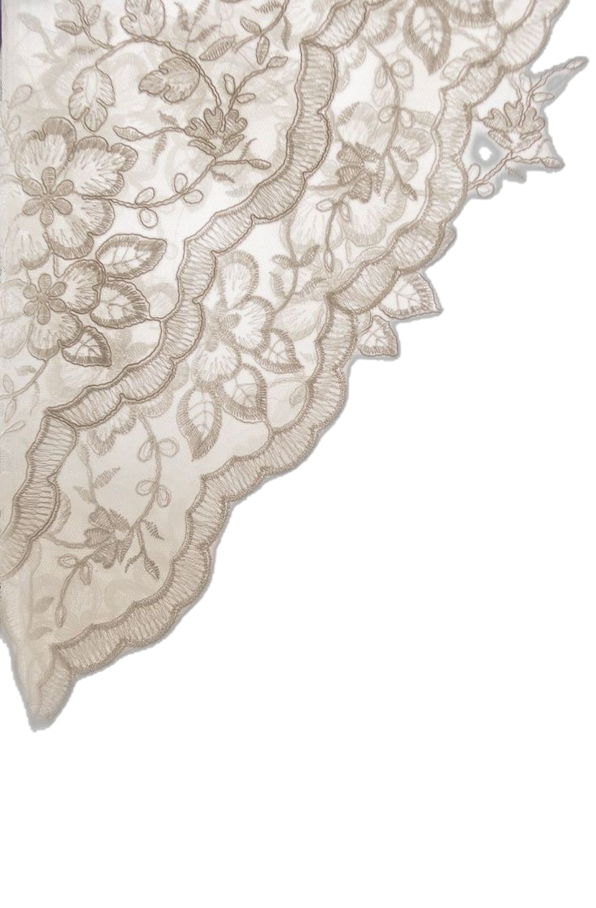
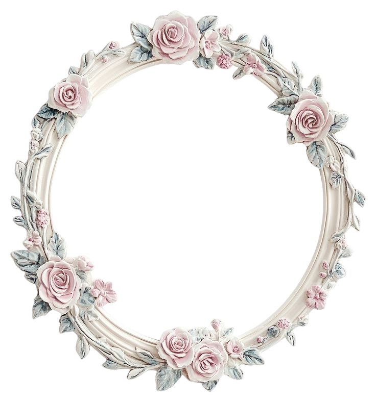
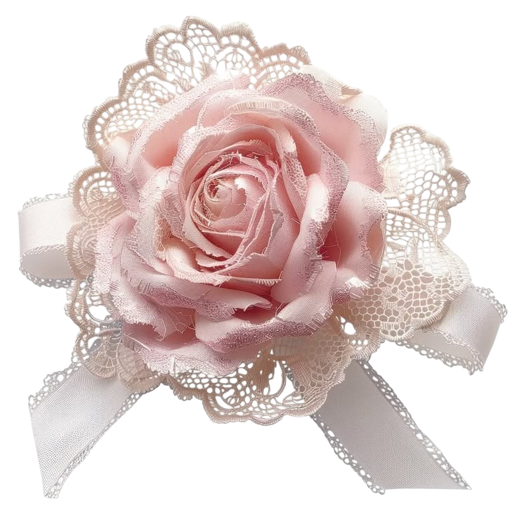
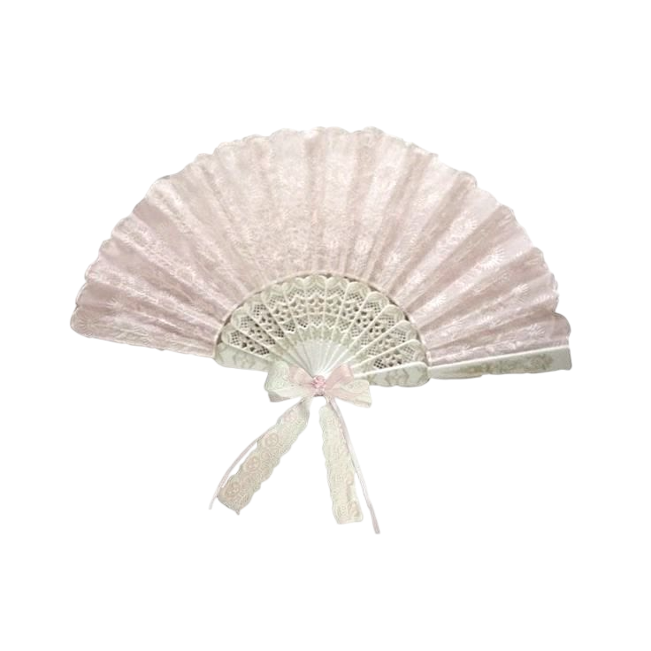
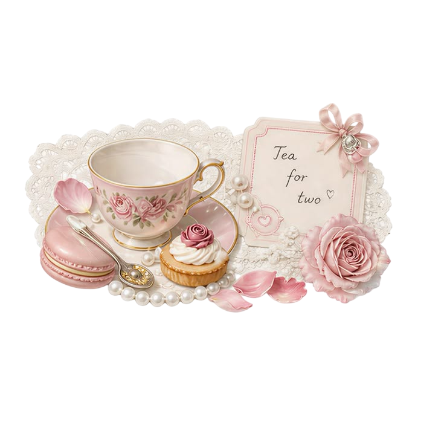

Lắng nghe & đồng cảm
Hiểu khó khăn của người học, cùng tìm cách tiếp cận phù hợp.

MY LITTLE CORNER OF THE WORLD
Xin chào, mình là
Một tâm hồn yêu nghệ thuật,
một người học kinh tế thích đặt câu hỏi.



Mình là Giang, bạn cũng có thể gọi mình là Thỏ. Hiện mình là sinh viên năm 3 tại Đại học Ngoại thương Hà Nội, theo học ngành Kinh tế quốc tế.
Mình thích phân tích một vấn đề thật sâu, lắng nghe những góc nhìn khác nhau và biến ý tưởng thành điều cụ thể. Ngoài những con số, mình tìm thấy cảm hứng trong hội họa, âm nhạc và nét đẹp cổ điển.
Rất vui vì bạn đã ghé qua, Giang ♡
NHỮNG ĐIỀU MÌNH MANG ĐẾN
Hiểu khó khăn của người học, cùng tìm cách tiếp cận phù hợp.
Đặt câu hỏi, tìm nguyên nhân và sắp xếp vấn đề có hệ thống.
Linh hoạt trong cách giải thích, có trách nhiệm với điều mình làm.
5 năm học sinh giỏi; nhiều năm làm lớp trưởng, liên đội trưởng. Đạt giải Olympic Toán, tiếng Việt và IOE cấp huyện; giải Nhất, Nhì Olympic cấp tỉnh và giải Nhì giao lưu các môn học cấp tỉnh.
Tiểu học4 năm học sinh giỏi; giải Nhì, Ba học sinh giỏi Toán và tiếng Anh cấp huyện. Điểm trung bình trên 9.0, tiếng Anh trên 9.6.
Trung học cơ sở3 năm học sinh giỏi; điểm trung bình trên 9.0, tiếng Anh trên 9.8. Giải Nhì học sinh giỏi tiếng Anh cấp tỉnh. IELTS 7.0 và trúng tuyển Đại học Ngoại thương Hà Nội.
Trung học phổ thôngHọc Kinh tế quốc tế tại FTU, tham gia Ban Đối ngoại CLB Tiếng Nhật và phát triển mối quan tâm về nghiên cứu định lượng.
Đại họcNghiên cứu tác động của Flash Sale đến doanh số các sàn thương mại điện tử tại Việt Nam.
Tiểu luận về giả thuyết Thiên đường Ô nhiễm, công nghiệp hóa và phát thải CO₂ ở các quốc gia thu nhập trung bình.
Hoạt động tại Ban Đối ngoại CLB Tiếng Nhật: kết nối, phối hợp và xây dựng ý tưởng cho hoạt động cộng đồng.

Mình mong muốn tiếp tục học thạc sĩ tại châu Âu, phát triển năng lực nghiên cứu kinh tế và khám phá con đường tư vấn, chiến lược.
Mình luôn vui khi được trao đổi về học tập,
nghiên cứu và những ý tưởng sáng tạo.
k63.2411410042@ftu.edu.vn